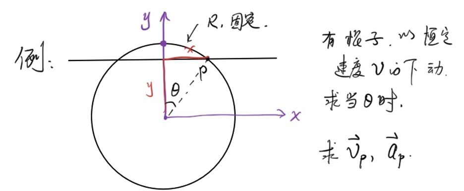
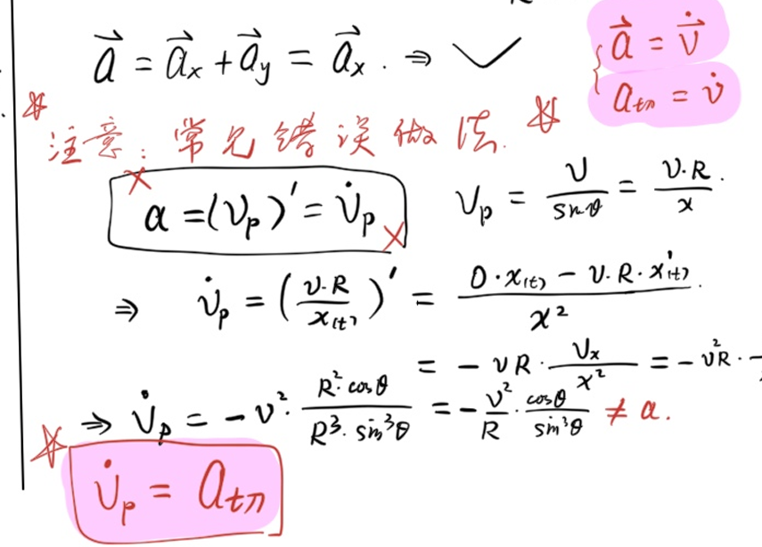
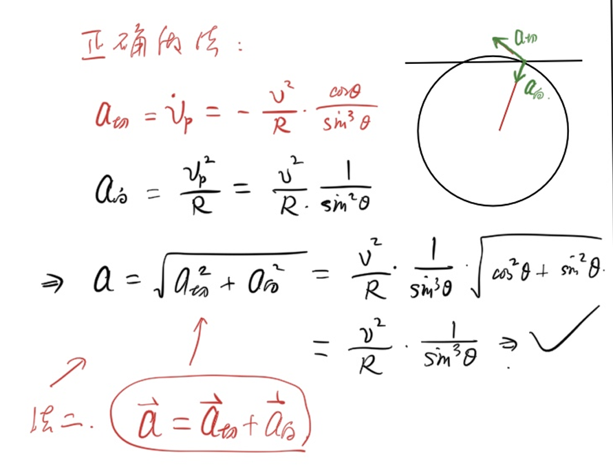

<meta data-alternate="https://freshmark.sunisalex.org/en/posts/physics/basic-calculus-01/" data-article="true" data-canonical="https://freshmark.sunisalex.org/posts/physics/basic-calculus-01/" data-description="本文中涉及到的微积分服务于 物理竞赛 ,侧重于 实用性 ,而非 严谨性" data-freshmark-page data-title="微积分基础导论:极限与导数 — Freshmark"><main><header class="container article-header"><a href="/" class="back-link">← 返回全部文章</a><p class="eyebrow article-subject">物理</p><h1>微积分基础导论:极限与导数</h1><p class="article-dek">本文中涉及到的微积分服务于 物理竞赛 ,侧重于 实用性 ,而非 严谨性</p><div class="article-meta"><time datetime="2026-05-17">2026年5月17日</time><span>5 分钟阅读</span><span>物理竞赛 · 微积分</span><span class="view-count" data-article-view-count hidden>本文访问量 <strong data-article-views></strong></span><a href="index.md" download>下载 Markdown</a><button type="button" class="article-share" data-share-article data-share-text="本文中涉及到的微积分服务于 物理竞赛 ,侧重于 实用性 ,而非 严谨性" data-share-title="微积分基础导论:极限与导数"><span data-share-label>分享文章</span></button><output aria-live="polite" class="visually-hidden" data-share-status role="status"></output></div></header><div class="article-wrap"><aside class="toc"><div class="toc-head"><p>本文目录</p><button type="button" class="toc-toggle" aria-expanded="false" aria-label="展开或收起目录" data-toc-toggle><span class="toc-toggle-label">目录</span><span class="toc-toggle-icon" aria-hidden="true"></span></button></div><nav aria-label="目录" class="toc-links" data-toc-links><a href="#数列极限" class="toc-level-2">数列极限</a><a href="#引入" class="toc-level-3">引入</a><a href="#ϵn语言" class="toc-level-3">ϵ−N语言</a><a href="#函数极限" class="toc-level-2">函数极限</a><a href="#引入-2" class="toc-level-3">引入</a><a href="#ϵδ语言" class="toc-level-3">ϵ−δ语言</a><a href="#好用的极限判断法则" class="toc-level-2">好用的极限判断法则</a><a href="#夹逼定理" class="toc-level-3">夹逼定理</a><a href="#例1" class="toc-level-4">例1</a><a href="#极限运算法则" class="toc-level-3">极限运算法则</a><a href="#例2" class="toc-level-4">例2</a><a href="#导数" class="toc-level-2">导数</a><a href="#引入-3" class="toc-level-3">引入</a><a href="#导数微商" class="toc-level-4">导数↔微商</a><a href="#导数的定义" class="toc-level-3">导数的定义</a><a href="#常见函数的导数" class="toc-level-3">常见函数的导数</a><a href="#例由定义推导" class="toc-level-4">例：由定义推导 <span class="math-expression math-inline" data-math-source="(x^2)&#39;=2x"></span></a><a href="#导数的四则运算法则" class="toc-level-2">导数的四则运算法则</a><a href="#法则" class="toc-level-3">法则</a><a href="#推导乘法法则" class="toc-level-3">推导乘法法则</a><a href="#例题" class="toc-level-3">例题</a><a href="#例1-2" class="toc-level-4">例1</a><a href="#例2-2" class="toc-level-4">例2</a><a href="#例3" class="toc-level-4">例3</a><a href="#例4" class="toc-level-4">例4</a><a href="#导数的物理应用" class="toc-level-2">导数的物理应用</a><a href="#例1-3" class="toc-level-3">例1</a><a href="#例2-3" class="toc-level-3">例2</a><a href="#法一" class="toc-level-4">法一</a><a href="#法二" class="toc-level-4">法二</a><a href="#ai总结sonnet-46" class="toc-level-2">AI总结(Sonnet 4.6)</a></nav></aside><article class="prose"><p>本文中涉及到的微积分服务于<strong>物理竞赛</strong>,侧重于<strong>实用性</strong>,而非<strong>严谨性</strong></p><!--more--><h2 id="数列极限">数列极限</h2><h3 id="引入">引入</h3><p>设<span class="math-expression math-inline" data-math-source="a_n=1-10^{-n}(n=1,2,3,...)"></span></p><p>可以知道,<span class="math-expression math-inline" data-math-source="a_n"></span>越来越接近于1,但是当<span class="math-expression math-inline" data-math-source="n"></span>无穷大时,<span class="math-expression math-inline" data-math-source="a_n"></span>到底是不是1呢?</p><p>由此,我们由误差的角度,引入<span class="math-expression math-inline" data-math-source="\epsilon-\N"></span>语言:</p><h3 id="ϵn语言">ϵ−N语言</h3><p>如果存在一个<span class="math-expression math-inline" data-math-source="p\in \R"></span>使得:对于任意的实数<span class="math-expression math-inline" data-math-source="\epsilon\gt0"></span>,都存在一个整数<span class="math-expression math-inline" data-math-source="\N"></span>,使得对于任意<span class="math-expression math-inline" data-math-source="n\gt N"></span>,<span class="math-expression math-inline" data-math-source="|a_n-p|\lt\epsilon"></span>,那么称<span class="math-expression math-inline" data-math-source="p"></span>为数列<span class="math-expression math-inline" data-math-source="a_n"></span>的极限,记作<span class="math-expression math-inline" data-math-source="\lim_{n\to \infty}a_n=p"></span>.否则叫做数列<span class="math-expression math-inline" data-math-source="a_n"></span>没有极限</p><h2 id="函数极限">函数极限</h2><h3 id="引入-2">引入</h3><p>有了级数(数列)的极限,自然引出函数的极限.</p><p>当<span class="math-expression math-inline" data-math-source="x\to 0"></span>时,<span class="math-expression math-inline" data-math-source="f(x)=\frac{\sin x}{x}"></span>的值等于多少?</p><iframe frameborder="0" height="500" src="https://www.desmos.com/calculator/pmghhxkevq?embed" style="border:1px solid #ccc" width="500"></iframe><p>同理,引出<span class="math-expression math-inline" data-math-source="\epsilon-\delta"></span>语言</p><h3 id="ϵδ语言">ϵ−δ语言</h3><p>如果存在一个<span class="math-expression math-inline" data-math-source="p\in \R"></span>使得:对任意<span class="math-expression math-inline" data-math-source="\epsilon\gt0"></span>,若存在<span class="math-expression math-inline" data-math-source="\delta\gt0"></span>,使得当<span class="math-expression math-inline" data-math-source="0\lt x_0-x\lt \delta"></span>时,<span class="math-expression math-inline" data-math-source="|f(x)-p|\lt\epsilon"></span>,则称<span class="math-expression math-inline" data-math-source="f(x)"></span>在<span class="math-expression math-inline" data-math-source="x_0"></span>处的<strong>左极限</strong>为<span class="math-expression math-inline" data-math-source="p"></span>,记作<span class="math-expression math-inline" data-math-source="\lim_{x \to x_0^-} f(x)=p"></span></p><p>同理容易得到<strong>右极限</strong>的定义.</p><p>此外,如果<span class="math-expression math-inline" data-math-source="\lim_{x \to x_0^-} f(x)=\lim_{x \to x_0^+} f(x)"></span>,则称<span class="math-expression math-inline" data-math-source="f(x)"></span>在<span class="math-expression math-inline" data-math-source="x_0"></span>处的<strong>极限</strong>为<span class="math-expression math-inline" data-math-source="p"></span>,记作<span class="math-expression math-inline" data-math-source="\lim_{x \to x_0} f(x)=p"></span></p><p>以上的 ϵ−N语言/ϵ−δ语言 不是本节的重点</p><h2 id="好用的极限判断法则">好用的极限判断法则</h2><h3 id="夹逼定理">夹逼定理</h3><p>若<span class="math-expression math-inline" data-math-source="f(x)\le g(x)\le h(x)"></span>,且<span class="math-expression math-inline" data-math-source="f(x),h(x)"></span>极限存在且相同,则<span class="math-expression math-inline" data-math-source="f(x),h(x),g(x)"></span>极限存在且相同.</p><h4 id="例1">例1</h4><p>(不严谨地)感受<span class="math-expression math-inline" data-math-source="\lim_{x\to 0}\frac{\sin x}{x}=1"></span></p><p>由单位圆中面积大小关系,熟知<span class="math-expression math-inline" data-math-source="\sin x\le x\le\tan x,x\in [0,\frac{\pi}{2})"></span></p><p>于是,有不等式<span class="math-expression math-inline" data-math-source="\cos x=\frac{\sin x}{\tan x}\lt \frac{\sin x}{x}\lt 1,x\in (0,\frac{\pi}{2})"></span></p><p>因为<span class="math-expression math-inline" data-math-source="\cos x,1"></span>在0处的极限都是1,所以: <span class="math-expression math-display" data-math-source="\boxed{\lim_{x\to 0}\frac{\sin x}{x}=1}" data-math-display></span></p><h3 id="极限运算法则">极限运算法则</h3><p>容易证明,四则运算的极限等于极限的四则运算:</p><ol><li>若<span class="math-expression math-inline" data-math-source="\lim_{x\to x_0}f(x)=p_1,\lim_{x\to x_0}f(x)=p_2"></span>,则:</li></ol><ul><li><span class="math-expression math-inline" data-math-source="\lim_{x\to x_0}(f(x)\pm g(x))=p_1\pm p_2"></span></li><li><span class="math-expression math-inline" data-math-source="\lim_{x\to x_0}(f(x)g(x))=p_1p_2"></span></li></ul><ol start="2"><li>若<span class="math-expression math-inline" data-math-source="\lim_{x\to x_0}f(x)=p_1,\lim_{x\to x_0}f(x)=p_2\ne 0"></span>,则:</li></ol><ul><li><span class="math-expression math-inline" data-math-source="\lim_{x\to x_0}\frac{f(x)}{g(x)}=\frac{p_1}{p_2}"></span></li></ul><h4 id="例2">例2</h4><p>计算极限(不一定存在极限)</p><p><span class="math-expression math-display" data-math-source="\lim_{x \to 5} \frac{1}{x-5}" data-math-display></span> <span class="math-expression math-inline" data-math-source="x-5\to 0"></span>,不存在极限 <span class="math-expression math-display" data-math-source="\lim_{x \to 0} \frac{x^2}{\sin x}" data-math-display></span> <span class="math-expression math-display" data-math-source="\lim_{x \to 0} \frac{x^2}{\sin x}=\frac{\lim_{x\to 0}x}{\lim_{x\to 0}\frac{\sin x}{x}}=\frac{0}{1}=0" data-math-display></span> <span class="math-expression math-display" data-math-source="\lim_{x \to \infty} \frac{\sin x}{x}" data-math-display></span> 由夹逼定理: <span class="math-expression math-display" data-math-source="\frac{-1}{|x|}\le \frac{\sin x}{x}\le \frac{1}{|x|}" data-math-display></span> 左右极限等于0,所以所求极限为0. <span class="math-expression math-display" data-math-source="\lim_{x \to \infty} \frac{10x^2 + 203x}{3x^2 + 5x + 7}" data-math-display></span> <span class="math-expression math-display" data-math-source="\lim_{x \to \infty} \frac{10x^2 + 203x}{3x^2 + 5x + 7}=\lim_{x \to \infty} \frac{10 + 203\frac{1}{x}}{3 + 5\frac{1}{x} + 7\frac{1}{x^2}}=\frac{\lim_{x \to \infty}(10 + 203\frac{1}{x})}{\lim_{x \to \infty}(3 + 5\frac{1}{x} + 7\frac{1}{x^2})}=\frac{10}{3}1" data-math-display></span> <span class="math-expression math-display" data-math-source="\lim_{x\to 0}\frac{1-\cos x}{x^2}" data-math-display></span> <span class="math-expression math-display" data-math-source="\lim_{x\to 0}\frac{1-\cos x}{x^2}=\lim_{x\to 0}\frac{2\sin^2 \frac{x}{2}}{x^2}=\frac{1}{2}\lim_{x\to 0}(\frac{\sin \frac{x}{2}}{\frac{x}{2}})(\frac{\sin \frac{x}{2}}{\frac{x}{2}})=\frac{1}{2}(\lim_{x\to 0}(\frac{\sin \frac{x}{2}}{\frac{x}{2}}))^2=\frac{1}{2}\times1^2=\frac{1}{2}" data-math-display></span></p><h2 id="导数">导数</h2><h3 id="引入-3">引入</h3><p>考虑函数 <span class="math-expression math-inline" data-math-source="f(x)=x^2"></span>，在 <span class="math-expression math-inline" data-math-source="x=1"></span>&#32;处，函数的<strong>瞬时变化率</strong>是多少？</p><p>我们先考虑从 <span class="math-expression math-inline" data-math-source="x=1"></span>&#32;到 <span class="math-expression math-inline" data-math-source="x=1+\Delta x"></span>&#32;的<strong>平均变化率</strong>：</p><p><span class="math-expression math-display" data-math-source="\frac{f(1+\Delta x)-f(1)}{\Delta x}=\frac{(1+\Delta x)^2-1}{\Delta x}=2+\Delta x" data-math-display></span></p><p>当 <span class="math-expression math-inline" data-math-source="\Delta x\to 0"></span>&#32;时，平均变化率趋近于 <span class="math-expression math-inline" data-math-source="2"></span>，这就是 <span class="math-expression math-inline" data-math-source="f(x)=x^2"></span>&#32;在 <span class="math-expression math-inline" data-math-source="x=1"></span>&#32;处的<strong>瞬时变化率</strong>，即<strong>导数</strong>.</p><h4 id="导数微商">导数↔微商</h4><p>微分,即微小变化量.微分之商,称为微商.</p><p>定义<span class="math-expression math-inline" data-math-source="f&#39;(x)=\lim_{\Delta x\to0}\frac{\Delta f}{\Delta x}=\frac{df}{dx}"></span></p><h3 id="导数的定义">导数的定义</h3><p>若极限</p><p><span class="math-expression math-display" data-math-source="\lim_{\Delta x\to 0}\frac{f(x_0+\Delta x)-f(x_0)}{\Delta x}" data-math-display></span></p><p>存在，则称 <span class="math-expression math-inline" data-math-source="f(x)"></span>&#32;在 <span class="math-expression math-inline" data-math-source="x_0"></span>&#32;处<strong>可导</strong>，该极限值称为 <span class="math-expression math-inline" data-math-source="f(x)"></span>&#32;在 <span class="math-expression math-inline" data-math-source="x_0"></span>&#32;处的<strong>导数</strong>，记作 <span class="math-expression math-inline" data-math-source="f&#39;(x_0)"></span>&#32;或 <span class="math-expression math-inline" data-math-source="\left.\dfrac{\mathrm{d}f}{\mathrm{d}x}\right|_{x=x_0}"></span>.</p><p>若 <span class="math-expression math-inline" data-math-source="f(x)"></span>&#32;在定义域上每一点都可导，则称 <span class="math-expression math-inline" data-math-source="f&#39;(x)"></span>&#32;为 <span class="math-expression math-inline" data-math-source="f(x)"></span>&#32;的<strong>导函数</strong>，简称<strong>导数</strong>.</p><blockquote><p>以上严格定义不是本节重点，重要的是会<strong>计算</strong>导数.</p></blockquote><h3 id="常见函数的导数">常见函数的导数</h3><p>由定义出发，可以推导出以下常用结论：</p><table><thead><tr><th style="text-align:center">函数 <span class="math-expression math-inline" data-math-source="f(x)"></span></th><th style="text-align:center">导数 <span class="math-expression math-inline" data-math-source="f&#39;(x)"></span></th></tr></thead><tbody><tr><td style="text-align:center"><span class="math-expression math-inline" data-math-source="C"></span>（常数）</td><td style="text-align:center"><span class="math-expression math-inline" data-math-source="0"></span></td></tr><tr><td style="text-align:center"><span class="math-expression math-inline" data-math-source="x^n"></span></td><td style="text-align:center"><span class="math-expression math-inline" data-math-source="nx^{n-1}"></span></td></tr><tr><td style="text-align:center"><span class="math-expression math-inline" data-math-source="\sin x"></span></td><td style="text-align:center"><span class="math-expression math-inline" data-math-source="\cos x"></span></td></tr><tr><td style="text-align:center"><span class="math-expression math-inline" data-math-source="\cos x"></span></td><td style="text-align:center"><span class="math-expression math-inline" data-math-source="-\sin x"></span></td></tr><tr><td style="text-align:center"><span class="math-expression math-inline" data-math-source="e^x"></span></td><td style="text-align:center"><span class="math-expression math-inline" data-math-source="e^x"></span></td></tr><tr><td style="text-align:center"><span class="math-expression math-inline" data-math-source="\ln x"></span></td><td style="text-align:center"><span class="math-expression math-inline" data-math-source="\dfrac{1}{x}"></span></td></tr></tbody></table><h4 id="例由定义推导">例：由定义推导 <span class="math-expression math-inline" data-math-source="(x^2)&#39;=2x"></span></h4><p><span class="math-expression math-display" data-math-source="\lim_{\Delta x\to 0}\frac{(x+\Delta x)^2-x^2}{\Delta x}=\lim_{\Delta x\to 0}\frac{2x\Delta x+(\Delta x)^2}{\Delta x}=\lim_{\Delta x\to 0}(2x+\Delta x)=2x" data-math-display></span></p><h2 id="导数的四则运算法则">导数的四则运算法则</h2><h3 id="法则">法则</h3><p>设 <span class="math-expression math-inline" data-math-source="f(x),g(x)"></span>&#32;均可导，则：</p><ol><li><strong>加减法则</strong>：<span class="math-expression math-inline" data-math-source="(f(x)\pm g(x))&#39;=f&#39;(x)\pm g&#39;(x)"></span></li><li><strong>乘法法则</strong>：<span class="math-expression math-inline" data-math-source="(f(x)g(x))&#39;=f&#39;(x)g(x)+f(x)g&#39;(x)"></span></li><li><strong>除法法则</strong>：<span class="math-expression math-inline" data-math-source="\left(\dfrac{f(x)}{g(x)}\right)&#39;=\dfrac{f&#39;(x)g(x)-f(x)g&#39;(x)}{[g(x)]^2}"></span>，其中 <span class="math-expression math-inline" data-math-source="g(x)\ne 0"></span></li></ol><blockquote><p><strong>记忆口诀</strong>：乘法法则——&quot;前导后不导，加上前不导后导&quot;；除法法则——&quot;上导下减上下导，除以下的平方&quot;.</p></blockquote><h3 id="推导乘法法则">推导乘法法则</h3><p><span class="math-expression math-display" data-math-source="[f(x)g(x)]&#39;=\lim_{\Delta x\to 0}\frac{f(x+\Delta x)g(x+\Delta x)-f(x)g(x)}{\Delta x}" data-math-display></span></p><p>加减同一项 <span class="math-expression math-inline" data-math-source="f(x)g(x+\Delta x)"></span>：</p><p><span class="math-expression math-display" data-math-source="=\lim_{\Delta x\to 0}\frac{f(x+\Delta x)-f(x)}{\Delta x}\cdot g(x+\Delta x)+f(x)\cdot\frac{g(x+\Delta x)-g(x)}{\Delta x}" data-math-display></span></p><p><span class="math-expression math-display" data-math-source="=f&#39;(x)g(x)+f(x)g&#39;(x)" data-math-display></span></p><h3 id="例题">例题</h3><h4 id="例1-2">例1</h4><p>求 <span class="math-expression math-inline" data-math-source="f(x)=x^3\sin x"></span>&#32;的导数.</p><p>由乘法法则：</p><p><span class="math-expression math-display" data-math-source="f&#39;(x)=(x^3)&#39;\sin x+x^3(\sin x)&#39;=3x^2\sin x+x^3\cos x" data-math-display></span></p><h4 id="例2-2">例2</h4><p>求 <span class="math-expression math-inline" data-math-source="f(x)=\dfrac{\sin x}{x}"></span>&#32;的导数（<span class="math-expression math-inline" data-math-source="x\ne 0"></span>）.</p><p>由除法法则：</p><p><span class="math-expression math-display" data-math-source="f&#39;(x)=\frac{(\sin x)&#39;\cdot x-\sin x\cdot(x)&#39;}{x^2}=\frac{x\cos x-\sin x}{x^2}" data-math-display></span></p><h4 id="例3">例3</h4><p>求 <span class="math-expression math-inline" data-math-source="f(x)=e^x(\sin x+\cos x)"></span>&#32;的导数.</p><p>由乘法法则：</p><p><span class="math-expression math-display" data-math-source="f&#39;(x)=(e^x)&#39;(\sin x+\cos x)+e^x(\sin x+\cos x)&#39;" data-math-display></span></p><p><span class="math-expression math-display" data-math-source="=e^x(\sin x+\cos x)+e^x(\cos x-\sin x)" data-math-display></span></p><p><span class="math-expression math-display" data-math-source="=2e^x\cos x" data-math-display></span></p><h4 id="例4">例4</h4><p>求 <span class="math-expression math-inline" data-math-source="f(x)=\tan x"></span>&#32;的导数.</p><p>将 <span class="math-expression math-inline" data-math-source="\tan x=\dfrac{\sin x}{\cos x}"></span>，由除法法则：</p><p><span class="math-expression math-display" data-math-source="(\tan x)&#39;=\frac{(\sin x)&#39;\cos x-\sin x(\cos x)&#39;}{\cos^2 x}=\frac{\cos^2 x+\sin^2 x}{\cos^2 x}=\frac{1}{\cos^2 x}=\sec^2 x" data-math-display></span></p><p><span class="math-expression math-display" data-math-source="\boxed{(\tan x)&#39;=\sec^2 x}" data-math-display></span></p><h2 id="导数的物理应用">导数的物理应用</h2><p><span class="math-expression math-display" data-math-source="\vec{v}=\lim_{\Delta t\to 0}\frac{\vec{x}}{\vec{t}}=\frac{d\vec{r}}{dt}=\dot{\vec{r}}" data-math-display></span><span class="math-expression math-display" data-math-source="\vec{a}=\lim_{\Delta t\to 0}\frac{\vec{v}}{\vec{t}}=\frac{d\vec{v}}{dt}=\dot{\vec{v}}=\ddot{\vec{r}}" data-math-display></span> 点号为<strong>牛顿记号</strong>,表示对时间求导.</p><h3 id="例1-3">例1</h3><p>运用导数,求角速度为<span class="math-expression math-inline" data-math-source="w"></span>的匀速圆周运动的速度与加速度的大小. <span class="math-expression math-display" data-math-source="\begin{cases} x=R\cos wt,\\ y=R\sin wt \end{cases}" data-math-display></span><span class="math-expression math-display" data-math-source="\begin{cases} v_x=-Rw\sin wt,\\ v_y=Rw\cos wt \end{cases}" data-math-display></span> 于是<span class="math-expression math-inline" data-math-source="v=\sqrt{v_x^2+v_y^2}=Rw"></span>&#32;<span class="math-expression math-display" data-math-source="\begin{cases} a_x=-Rw^2\cos wt,\\ a_y=-Rw^2\sin wt \end{cases}" data-math-display></span> 于是<span class="math-expression math-inline" data-math-source="a=\sqrt{a_x^2+a_y^2}=Rw^2"></span></p><h3 id="例2-3">例2</h3><p><picture class="responsive-picture"><source srcset="image.freshmark-9c841fa15bcd-480w.avif 480w, image.freshmark-9c841fa15bcd-936w.avif 936w" type="image/avif"><source srcset="image.freshmark-9c841fa15bcd-480w.webp 480w, image.freshmark-9c841fa15bcd-936w.webp 936w" type="image/webp"></picture>对于这个问题,可以有两种处理方法:</p><ol><li>在直角坐标系中分解</li><li>在极坐标系中分解</li></ol><h4 id="法一">法一</h4><p>不妨从圆的最上端开始计时: <span class="math-expression math-display" data-math-source="\begin{cases} y=R-vt,\\ x=\sqrt{R^2-y^2}=\sqrt{R^2-(R-vt)^2} \end{cases}" data-math-display></span><span class="math-expression math-display" data-math-source="\begin{cases} v_y=\dot{y}=-v,\\ v_x=\dot{x}\\=\frac{1}{2}(R^2-(R-vt)^2)^\frac{-1}{2}[R^2-(R-vt)^2]&#39;\\=\frac{1}{2}(R^2-(R-vt)^2)^\frac{-1}{2}(-1)(-v)&#39;2(R-vt)\\ =(R^2-(R-vt)^2)^\frac{-1}{2}(R-vt)v\\ =\frac{vy}{x}=\frac{v}{\tan \theta} \end{cases}" data-math-display></span> 所以<span class="math-expression math-inline" data-math-source="v=\sqrt{v_x^2+v_y^2}=\frac{v}{\sin \theta}"></span>(由速度分解易得) <span class="math-expression math-display" data-math-source="\begin{cases} a_y=0,\\ a_x=(v\frac{y(t)}{x(t)})&#39;=v\frac{y&#39;x-yx&#39;}{x^2}=v\frac{xv_y-yv_x}{x^2}=-v^2\frac{x^2+y^2}{x^3}=-v^2\frac{1}{R\sin^3\theta} \end{cases}" data-math-display></span> 这里需要注意一个常见错误:</p><p><picture class="responsive-picture"><source srcset="image-1.freshmark-a8d798320b14-480w.avif 480w, image-1.freshmark-a8d798320b14-855w.avif 855w" type="image/avif"><source srcset="image-1.freshmark-a8d798320b14-480w.webp 480w, image-1.freshmark-a8d798320b14-855w.webp 855w" type="image/webp"></picture></p><p>修正之后,就得到了:</p><h4 id="法二">法二</h4><p><picture class="responsive-picture"><source srcset="image-2.freshmark-b40e28ca23aa-480w.avif 480w, image-2.freshmark-b40e28ca23aa-891w.avif 891w" type="image/avif"><source srcset="image-2.freshmark-b40e28ca23aa-480w.webp 480w, image-2.freshmark-b40e28ca23aa-891w.webp 891w" type="image/webp"></picture></p><h2 id="ai总结sonnet-46">AI总结(Sonnet 4.6)</h2><p><strong>微积分基础导论</strong>（物理竞赛向，侧重实用）分三大板块：</p><p><strong>极限</strong>：从数列极限（ε-N）到函数极限（ε-δ），掌握夹逼定理与四则运算法则，会算常见极限即可。</p><p><strong>导数</strong>：理解&quot;瞬时变化率即极限&quot;的本质，熟记常见函数导数表，掌握加减、乘法、除法三大运算法则。</p><p><strong>物理应用</strong>：速度 <span class="math-expression math-inline" data-math-source="v=\dot{r}"></span>，加速度 <span class="math-expression math-inline" data-math-source="a=\ddot{r}"></span>，用参数方程 + 求导处理圆周运动等几何问题。</p></article></div><section class="container comments" data-comments data-comments-path="/posts/physics/basic-calculus-01/"><div class="comments-head"><div><p class="eyebrow">评论</p><h2 data-comments-title>评论</h2></div><p>登录后参与讨论。注册时只需验证一次邮箱。</p></div><div class="comment-list" aria-live="polite" data-comment-list><p class="comment-state" data-comment-state>正在加载评论…</p></div><button type="button" class="comment-more" data-comments-more hidden>加载更早的评论</button><div class="comment-auth" data-comment-auth><p class="comment-auth-status" data-auth-loading>正在检查登录状态…</p><div hidden data-auth-guest><form class="comment-auth-form" data-auth-login><h3>登录后评论</h3><label>邮箱<input autocomplete="email" name="email" maxlength="254" required type="email"></label><label>密码<input autocomplete="current-password" name="password" maxlength="128" required type="password"></label><div class="comment-form-foot"><p class="comment-form-status" role="status" data-auth-login-status></p><button type="submit">登录</button></div></form><details class="comment-register"><summary>还没有账号？注册</summary><form class="comment-auth-form" data-auth-register><label>昵称<input autocomplete="name" name="name" maxlength="40" required></label><label>邮箱<input autocomplete="email" name="email" maxlength="254" required type="email"></label><label>密码<input autocomplete="new-password" name="password" maxlength="128" required type="password" minlength="8"></label><p class="comment-auth-hint">至少 8 个字符。</p><div class="comment-form-foot"><p class="comment-form-status" role="status" data-auth-register-status></p><button type="submit">注册</button></div></form></details></div><form class="comment-auth-form" hidden data-auth-verify><p>验证码已发送到邮箱，请在 10 分钟内完成注册。</p><label>六位验证码<input autocomplete="one-time-code" name="code" maxlength="6" required minlength="6" inputmode="numeric" pattern="[0-9]{6}"></label><div class="comment-form-foot"><p class="comment-form-status" role="status" data-auth-verify-status></p><button type="submit">完成注册</button></div></form><div class="comment-auth-user" data-auth-user hidden><p>当前登录： <strong data-auth-user-name></strong> <span data-auth-user-email></span></p><button type="button" data-auth-logout>退出登录</button></div></div><form class="comment-form" hidden data-comment-form><label>评论内容<textarea maxlength="2000" minlength="2" name="body" placeholder="写下你的想法…" required rows="5"></textarea></label><p class="comment-markdown-hint">支持 Markdown：加粗、链接、引用、列表和代码。</p><label aria-hidden="true" class="comment-honeypot">Website<input autocomplete="off" name="website" tabindex="-1"></label><div class="comment-form-foot"><p class="comment-form-status" role="status" data-comment-form-status></p><button type="submit" data-comment-submit>发表评论</button></div></form></section></main>